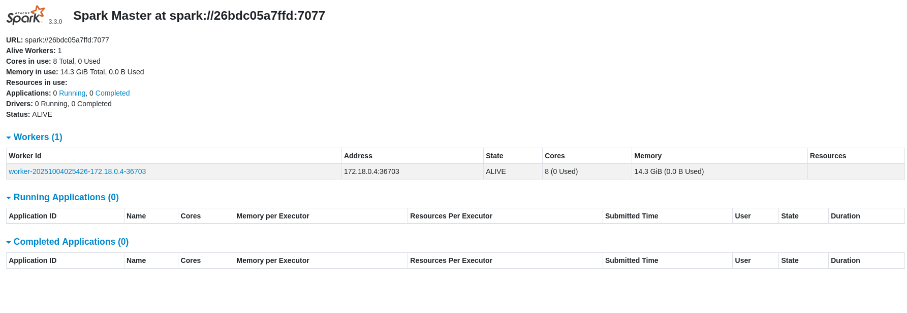
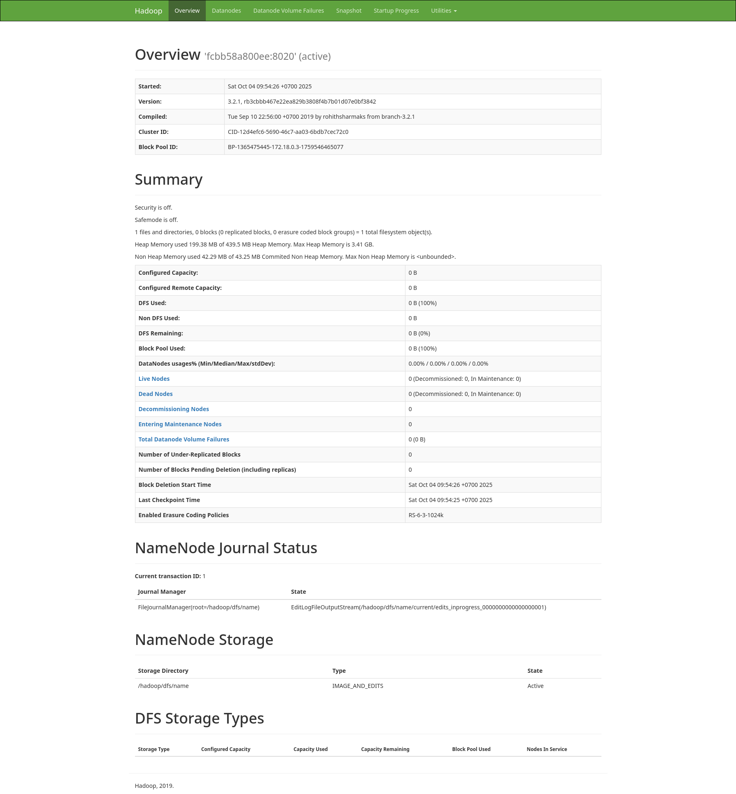

Create a folder, and inside it, a file named docker-compose.yml. Paste this code:
version: '3.8'
services:
spark-master:
image: bde2020/spark-master:3.3.0-hadoop3.3
container_name: spark-master
ports:
- "8080:8080"
- "7077:7077"
environment:
- INIT_DAEMON_STEP=setup_spark
networks:
- bigdata_network
spark-worker:
image: bde2020/spark-worker:3.3.0-hadoop3.3
container_name: spark-worker
depends_on:
- spark-master
ports:
- "8081:8081"
environment:
- SPARK_MASTER=spark://spark-master:7077
networks:
- bigdata_network
namenode:
image: bde2020/hadoop-namenode:2.0.0-hadoop3.2.1-java8
container_name: namenode
ports:
- "9870:9870"
volumes:
- hadoop_namenode:/hadoop/dfs/name
environment:
- CLUSTER_NAME=test
- "CORE_CONF_fs_defaultFS=hdfs://namenode:8020"
networks:
- bigdata_network
datanode:
image: bde2020/hadoop-datanode:2.0.0-hadoop3.2.1-java8
container_name: datanode
depends_on:
- namenode
volumes:
- hadoop_datanode:/hadoop/dfs/data
environment:
- SERVICE_PRECONDITION=namenode:9870
- "CORE_CONF_fs_defaultFS=hdfs://namenode:8020"
networks:
- bigdata_network
networks:
bigdata_network:
driver: bridge
volumes:
hadoop_namenode:
hadoop_datanode:
In your terminal, from the same folder, run:
docker-compose up -dCheck the web dashboards. This is your proof!
1. Spark UI: http://localhost:8080
2. HDFS UI: http://localhost:9870 (Go to the "Datanodes" tab)
Open a terminal and type:
docker exec -it namenode bashCreate a simple text file inside the container:
echo "hello spark hello hadoop spark is great" > test.txtCopy the file into HDFS:
hdfs dfs -mkdir -p /input
hdfs dfs -put test.txt /inputConnect to the Spark Master:
docker exec -it spark-master bashStart the interactive PySpark shell:
/spark/bin/pysparkEnter the following Python code one line at a time:
text_file = sc.textFile("hdfs://namenode:8020/input/test.txt")
counts = text_file.flatMap(lambda line: line.split(" ")) \
.map(lambda word: (word, 1)) \
.reduceByKey(lambda a, b: a + b)
output = counts.collect()
for (word, count) in output:
print(f"{word}: {count}")
exit()You should see the final counts printed to your screen:
hello: 2
great: 1
spark: 2
hadoop: 1
is: 1